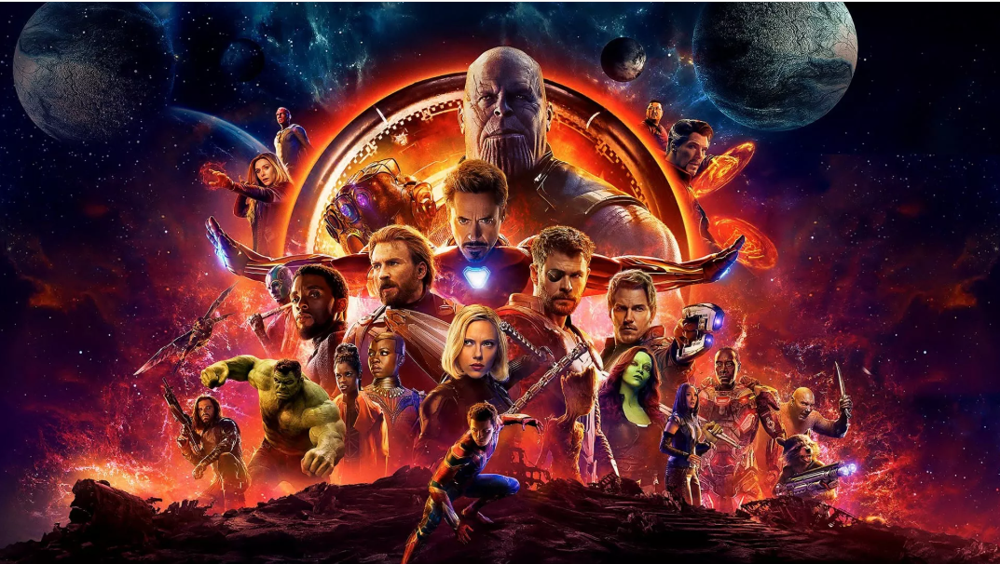
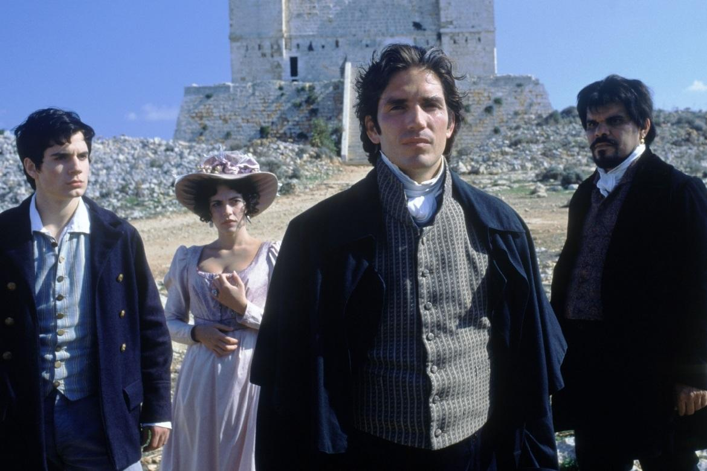
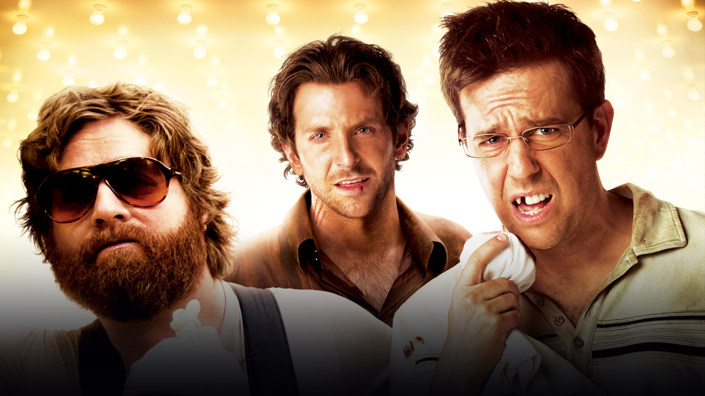

Meus filmes favoritos
Top 3 filmes.
Vingadores Ultimato
Após Thanos eliminar metade das criaturas vivas, os Vingadores têm de lidar com a perda de amigos e entes queridos. Com Tony Stark vagando perdido no espaço sem água e comida, Steve Rogers e Natasha Romanov lideram a resistência contra o titã louco.

O conde de Monte Cristo
Fernand Mondego não consegue mais suportar a inveja que possui de Edmond Dantes, por este possuir uma belíssima mulher. Influente, acaba fazendo com que Dantes, um homem pobre e honesto, seja acusado de traição e assassinato, indo parar em uma prisão ilhada e isolada do mundo. Dantes, ao longo dos anos que fica preso, vai perdendo a fé em Deus, até que encontra um padre que também estava preso e tinha um plano de fuga. Ele então escapa da prisão cheio de ódio e sedento por vingança.

Se beber não case
Dois dias antes de seu casamento, Doug e três amigos vão de carro até Las Vegas para uma louca e memorável despedida de solteiro. Quando os três padrinhos acordam na manhã seguinte, eles não conseguem se lembrar de nada e notam que Doug desapareceu. Com pouco tempo de sobra, os amigos tentam refazer a noite anterior e encontrar Doug para que possam levá-lo de volta a Los Angeles a tempo de chegar ao altar.

Minha serie de comedia favorita.
Big Bang a Teoria
Minha serie medieval favorita
Game Of Thrones
Minha serie de fantasia favorita
O Senhor dos Anéis
voltar